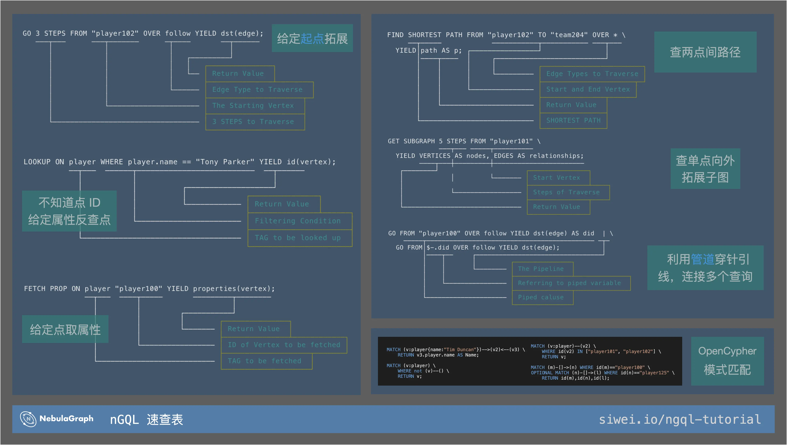

nGQL 简明教程，第一期

本文旨在让新手快速了解 nGQL，掌握方向，之后可以脚踩在地上借助文档写出任何心中的 NebulaGraph 图查询。
1 视频
本教程的视频版在这里。
2 开始之前
本文假设你已经在文档看过快速入门流程，部署、连接过 NebulaGraph，并且看过了常用命令。如果您还没看过这两个文档，强烈建议先快速过一遍。
2.1 教程目标
本教程目的在于让新手大概知道了 NebulaGraph 的查询语句后，解决“不知道什么样的查询应该用什么语句”的问题。
2.2 nGQL 是什么
我们先强调一下概念：nGQL 是 NebulaGraph Graph Query Language 的缩写，它表示 NebulaGraph 的查询语言，而 nGQL 的语句可以不严谨地分为这几部分：
- NebulaGraph 独有 DQL 查询语句（Data Query Language）
- NebulaGraph OpenCypher DQL
- NebulaGraph DML 写语句（Data Mutation Language）
- NebulaGraph DDL Schema 语句（Data Definition Language)
- NebulaGraph Admin Queries 管理语句
这里，作为简明教程一把梭，我们只关注前两个部分，后边的内容会在 Part 2 中介绍。
2.3 nGQL 速查表 Cheatsheet
大家可以报错这份单页速查表，一次了解所有 nGQL 的用法。

3 NebulaGraph 独有 DQL
NebulaGraph 的独有读查询语句的设计非常简介，对初学者非常友好，结合了管道的概念，做到了只涉及了几个关键词就可以描述大多数图查询模式。
用一句话描述来说，nGQL 的独有 DQL 一共分成四类语句：
- 图拓展：
GO - 索引反查：
LOOKUP - 取属性：
FETCH PROP - 路径与子图：
FIND PATH与GET SUBGRAPH
和几个特别的元素
-
管道：
| -
引用属性:
$开头的几个符号，用来描述一些特定的上下文
3.1 图拓展 GO
GO 的语义非常直观：从给定的起点，向外拓展，按需返回终点、起点的信息。
|
|
参考 GO 语句文档，了解如何：
- 指定反方向拓展、双向拓展
- 指定可变跳数拓展
- 基于所有类型边拓展
- 返回其他信息
3.2 LOOKUP 基于索引反查 ID
和 GO 为从已知的点出发相反，LOOKUP 是一个类似于 SQL 里 SELECT 语义的关键字，它实际的作用也类似与关系型数据库中的扫表。
LOOKUP 需要手动明确建立相应 TAG、边类型上索引才能允许相应的查询。
3.2.1 为什么 LOOKUP 需要索引？
因为 NebulaGraph 中的数据默认是按照邻接表的形式存储，在分布式设计中，扫描一个类型的点、边是非常昂贵的，所以它被默认禁止了。而创建相应的索引类似于增加了类似于表结构数据库的排序数据，可以用来做类似于 SELECT 的查询。
创建索引的代价是什么（增加写入负担）？索引会加速读么（不会，它是提供了 LOOKUP 的可能性，原生图的查询不需要索引加速）？等等更详细的问题请参阅我之前的索引详解文章。
|
|
进一步参考 LOOKUP 语句文档，了解如何：
3.3 FETCH PROP 获取属性
如字面意思，如果我们知道一个点、边的 ID，想要获取它上边的属性，这时候我们要用 FETCH PROP 而非 LOOKUP。
|
|
进一步参考 FETCH PROP 语句文档，了解如何：
- 返回某一个属性
- 获取给定边的属性
3.4 路径查找 FIND PATH
如果我们从给定的起点、终点中，找到之间的所有路径，一定要用 FIND PATH
|
|
进一步参考 FIND PATH 语句文档，了解如何：
- 返回路径中的属性
- 设定拓展方向
3.5 单点子图 GET SUBGRAPH
和路径查找类似，但是我们只给定一个起点和拓展部署，用 GET SUBGRAPH 可以帮我们获取同样的 BFS 出去的子图
|
|
进一步参考 GET SUBGRAPH 语句文档，了解如何：
- 返回带有属性的点、边
- 设定拓展方向
3.6 利用管道和属性引用符
NebulaGraph 的管道设计和 Unix-Shell 的设计很像，可以将简单的几种语句结合起来，有强大的表达力。
|
|
- 更多属性引用定义
- 更多例子
- 结合 LOOKUP, GO, FETCH 的语句
除了以上的集中表达之外，NebulaGraph 独有查询语句还有聚合的表达参考 GROUP-BY，另外在文档里还有一个 Cheatsheet 供大家查询一些复杂一点查询的例子。
3.7 NebulaGraph OpenCypher DQL
从 2.0 起，OpenCypher 的 MATCH 语句也被 NebulaGraph 原生支持了，虽然这里是一个方言（有一些细节差异）。
|
|
MATCH 的基本表达是以 (v:tag_a) 包裹的点 --> 或者 <-[:edge_type_1]- 表达的边组成的模式，与 RETURN 表达的输出。
如果您从 Cypher 的查询语句入门图数据库，可以从下边几个例子了解到几个 NebulaGraph 里的细节差异：
- 增加了
WHERE id(v) == "foo"的表达 ==表达相等判断而不是=- 点的属性表达需要填写 TAG，例如
v3.player.name而不是v3.name
|
|
进一步参考 MATCH 文档了解：
- 更多例子
- 可变跳数的 MATCH 表达
- 多 MATCH
- OPTIONAL MATCH
题图版权：DALL·E Open-AI，原图
Featured image was generated with key words: learning spells of the nebula magic, with DALL·E Open-AI.


{kind=link}
{kind=link}